大家好，我是热爱编程的苍何。
去年底的时候，我写过 2 篇 AI 漫剧的文章，感兴趣的还挺多的。
也认识了非常多做 AI 漫剧的朋友，我们武汉 AI 圈也举办了 AI 漫剧沙龙，来了超级多的感兴趣的圈友。
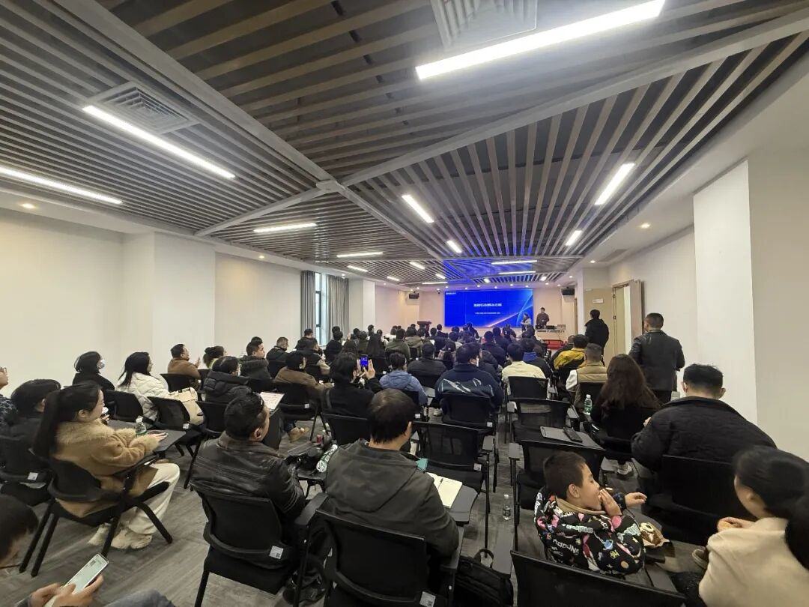
听了很多的干货分享，当时脑海中只想快速上手来做漫剧。
但我看了很多的平台目前还只能在电脑 web 上操作，手机随时创作我还没找到什么好的 APP。
当时就有一股冲动，要不自己来尝试搞一个？当我和老婆说这个想法的时候，她说我一定疯了。
为了证明我不是疯子，我还是咬牙决定尝试，毕竟不留遗憾才是我的人生主旋律。
耗时 8 天，今天终于可以拿出来和大家分享了，一个可以在手机端创建漫剧的 app，我给它起名叫做漫导，没错就是这么通俗易懂；制作漫剧的导演。
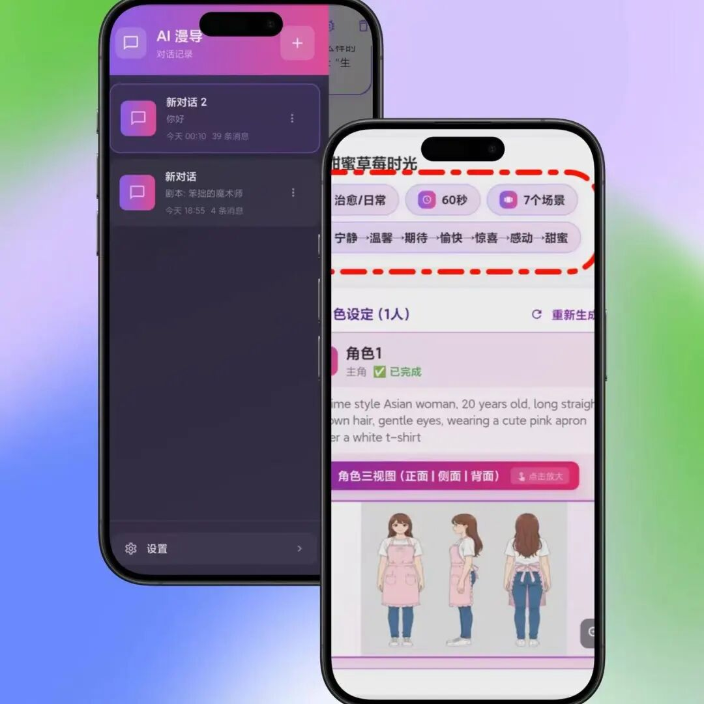
它能根据灵感一句话创建剧本、角色、场景，然后自动生成分镜图片和分镜视频，最后根据分镜视频来合成一个完整的漫剧视频。
我录了个视频给大家做个展示：
8 天时间出来一个 AI 漫剧 APP 的 MVP 版本（这其中还不包括元旦放假 3 天），我自己已经相当满意了，人物一致性已经完成的很高了👍
最后说一下声音为啥不是中文，抱歉还没来得及约束😄。忍不住想分享了。
而且你可能想象不到的是，整个 APP 的开发，我用的是最近很火的智谱的 GLM 4.7 模型。
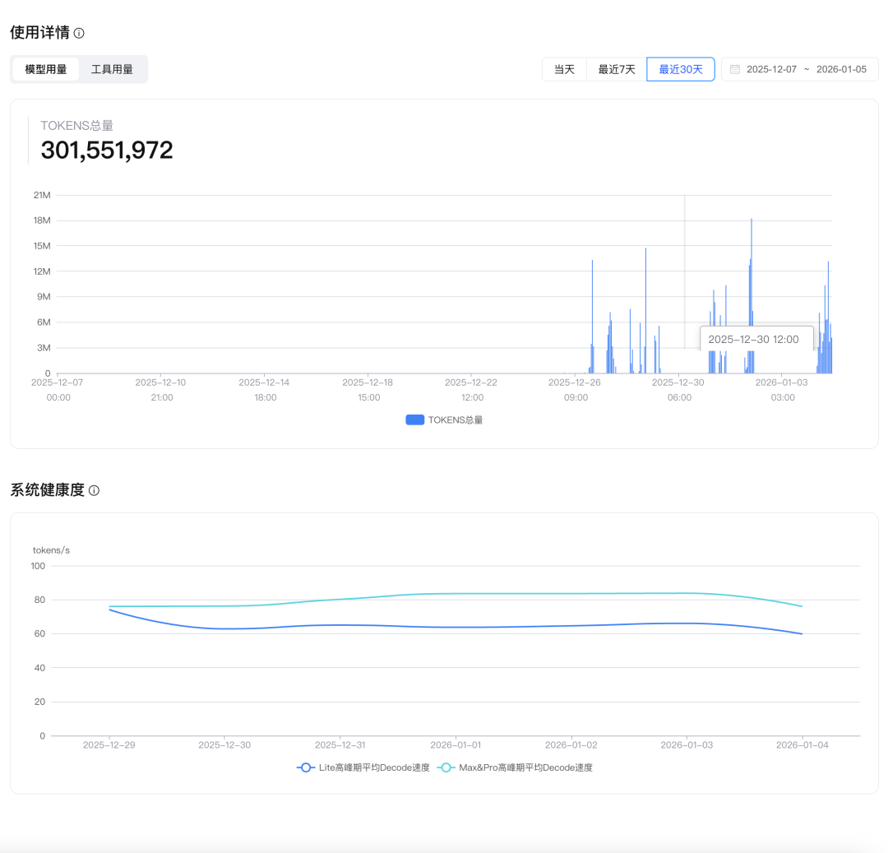
你看我的 token 消耗量，这里面包含了两部分，一部分是开发 app 使用的量，一部分是使用 app 规划剧本使用的量。说实话没想到这么多。
再看看账单。
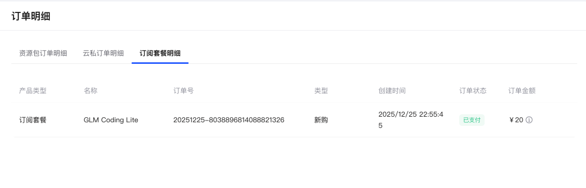
没错 20RMB。哦对了，我还在他们搞活动的时候薅了一杯奶茶。有点大薅特薅的感觉；
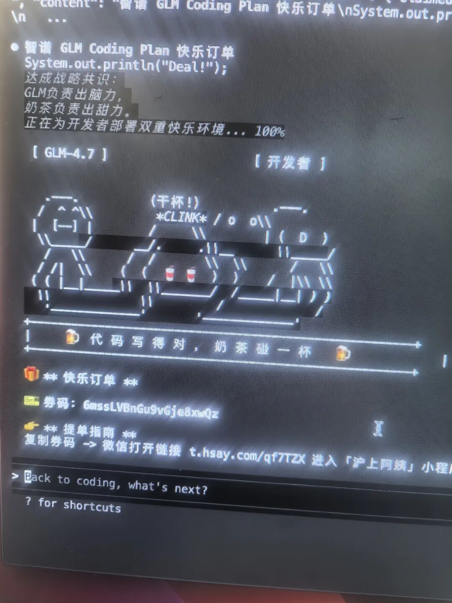
我已经把这个 AI 漫剧 APP 开源了，后面也希望有更多的开发者参与到我们的共建中来。
开源地址（求 star）：https://github.com/freestylefly/director_ai
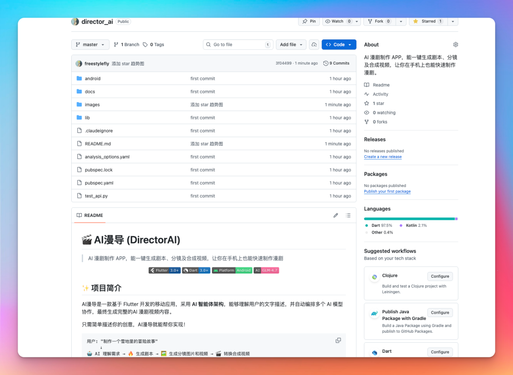
这一篇文章呢，我主要是想和你分享一下我的开发历程，也顺带来拷打 GLM 4.7 进行 AI Coding 的能力边界。
我总结了一下大概的流程是这样子的：
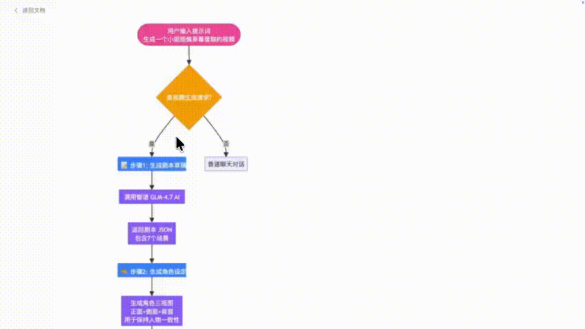
其中，我比较关心的是人物一致性解决方案：
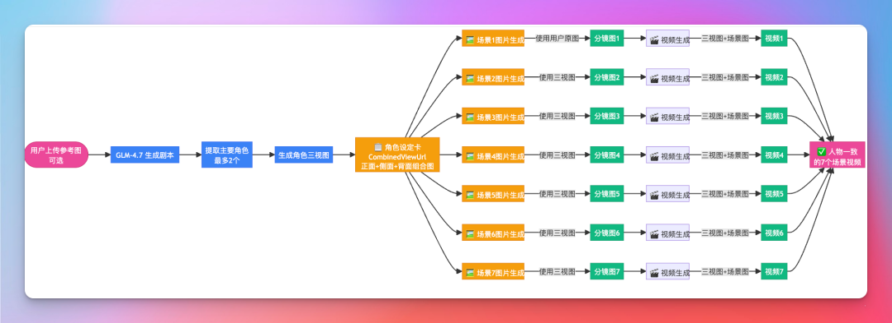
在对应场景的配置默认是给了 7 个，角色是给了 2 个，然后这些我都设置成可配置的了。
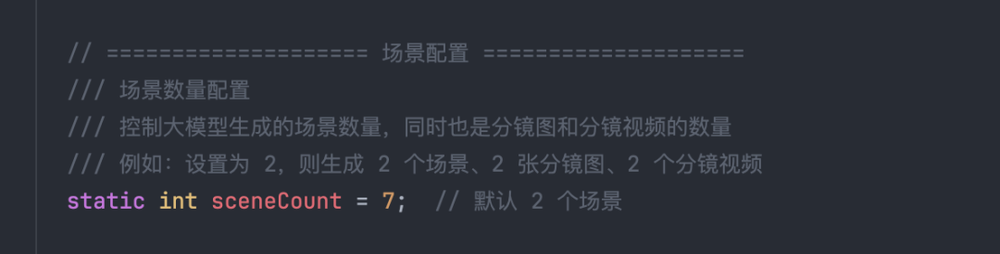
下面分享下我的开发历程，可能会显得文章会有些长，建议点赞收藏，转发给需要的朋友👭
工具选择
这次的任务有点重，工具选择很重要，终端的话就选最近全网又在喷火的 Claude Code，模型用智谱 GLM 4.7。
几方面考虑，一个是能力，一个是价格。
能力侧，先来看一张时间取自于 2025 年 12 月 22日的模型榜单图，可以看到和 Claude Opus 4.5 打的有来有回。
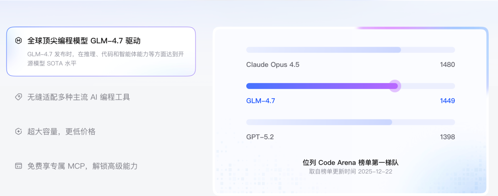
再看看最关心的价格，这是 Claude 的：
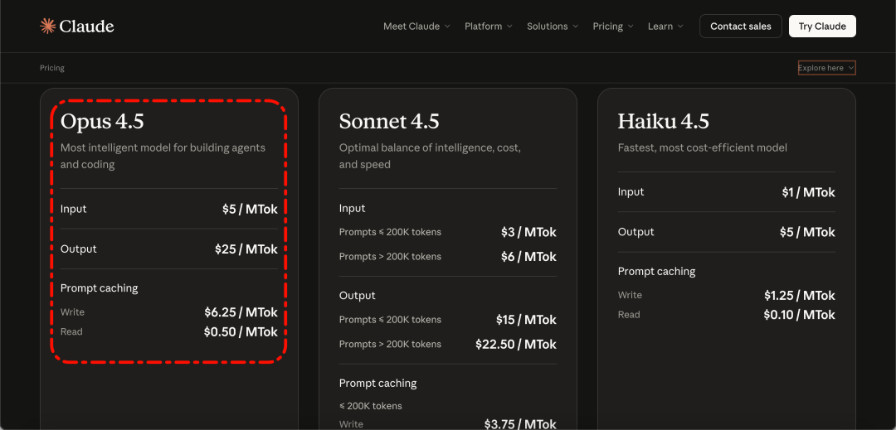
这个是 GLM Coding 的套餐，不想说啥了，没有对比就没有伤害啊。
虽然我看了非常多网上的测评，但一开始对 GLM 4.7 做漫剧 APP 这件事，本身是抱有怀疑态度的，后面证明，他真的行，而且超出了我的预期。
开发历程
首先直接编写提示词告知要做什么，这个很重要。
提示词：现在帮我编写一个安卓软件，用途是制作AI 漫剧，和用户对话的方式来了解用户想制作什么样子的漫剧，对话大模型使用的是 glm 4.7,相关的接口文档都保存在这个目录下面
director_ai/docs/图像生成API接口文档.md
director_ai/docs/视频处理全集.md
这里的接口文档是我去网站上下载来了的。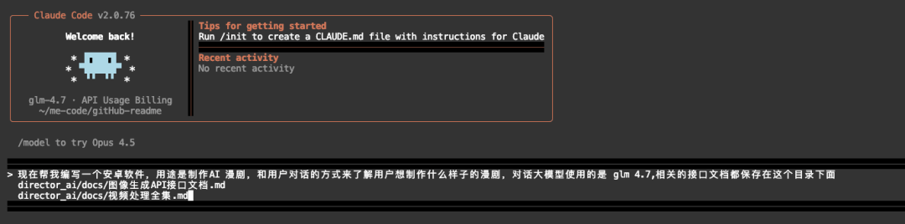
Claude Code 像打了鸡血一样，吭哧吭哧的干货。
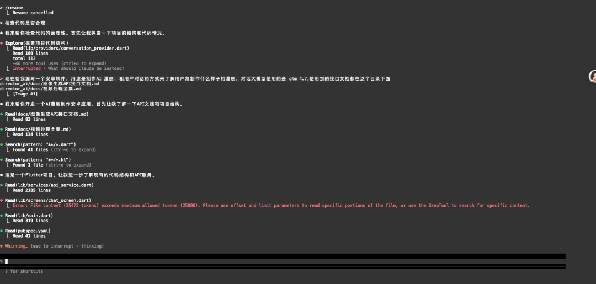
这里最好给 GLM 4.7 规划下架构，防止跑偏：
提示词：
核心技术栈推荐
为了最快速度出原型（MVP）且适配安卓：
开发工具 (IDE/Agent): Claude Code (基于 CLI 的全能编程助手)。
前端框架: Flutter (Dart)。
理由： Claude 对 Flutter 代码生成的准确度极高，且 Flutter 开发安卓应用速度快、UI 效果好，能够轻松处理异步网络请求（API 调用）。
核心大脑: GLM-4.7 (通过 API 调用)。
理由： 负责理解用户意图，拆解步骤，输出 JSON 格式的指令。
多模态接口: tu-zi.com (你提供的 Gemini 绘图 + Veo 视频接口)。架构设计这里我采用 ReAct 模式 (Reasoning + Acting)：
架构设计：ReAct 模式 (Reasoning + Acting)
为了凸显 GLM-4.7 的规划能力，不能把代码写死（硬编码）。我们需要实现一个简单的 ReAct (Reason-Act) 循环。
流程逻辑：
用户输入: "帮我做一个熊猫吃竹子的视频，要可爱的风格。"
GLM-4.7 (规划层): 思考并输出："我需要先生成文案，然后生成图片，最后生成视频。" -> 输出第一个工具调用指令。
App (执行层): 解析指令，调用绘图 API。
App (反馈层): 将图片 URL 喂回给 GLM-4.7。
GLM-4.7 (规划层): "收到图片，现在调用视频生成接口。"
App (执行层): 调用 Veo 视频接口。小白不用管，就是一蹲乱七八糟的基础搭建，我一路yes 就行。本身我也不懂 App 开发，此时我选择相信 GLM 4.7;
接下来解释 Coding 时刻，大概用了十分钟，一个由零到一的 APP 雏形诞生了，这是使用的 token 量。
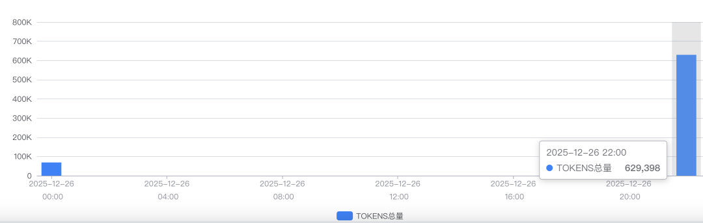
电脑调试启动那一刻我惊呆了。真的出来了，看看界面，美学也还很不错。
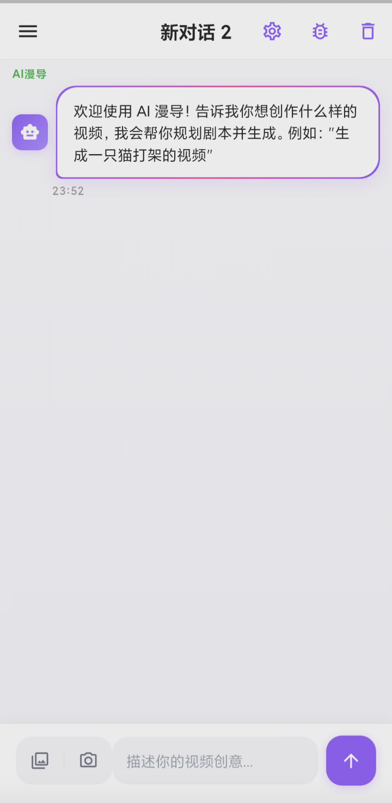
聊天框，正常的 ai 聊天，居然还支持了相机图片上传牛掰，UI 界面简约，正和我心意，还细心的加了了彩色边框，真的是完全可用啊。
还贴心的加上了对话记录：
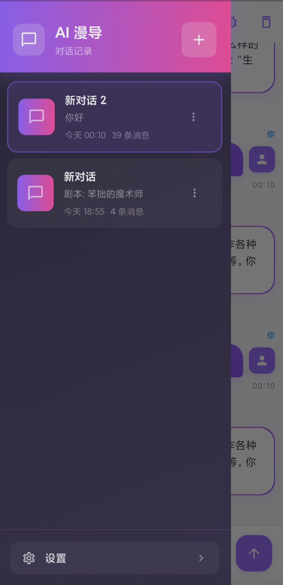
666 想的真周到
接着试试生成视频的功能怎么样？
最近喜欢吃草莓蛋糕，那就生成一个“做草莓蛋糕的视频”：
prompt： 生成一个小姐姐做草莓蛋糕的视频 可以看到漫导 APP 先会创建剧本：
很快就生成了剧本：
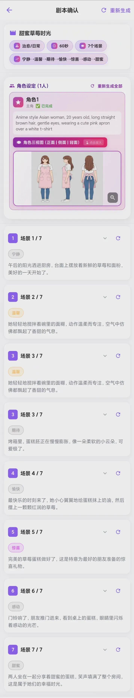
接着是生成角色图，能生成人物三视图，我们都知道漫剧最难的就是人物一致性，确定主角的三视图，贯穿整个剧本主角。
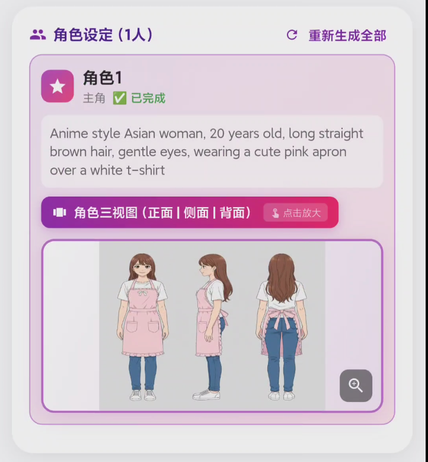
太细节了还有情感钩子：
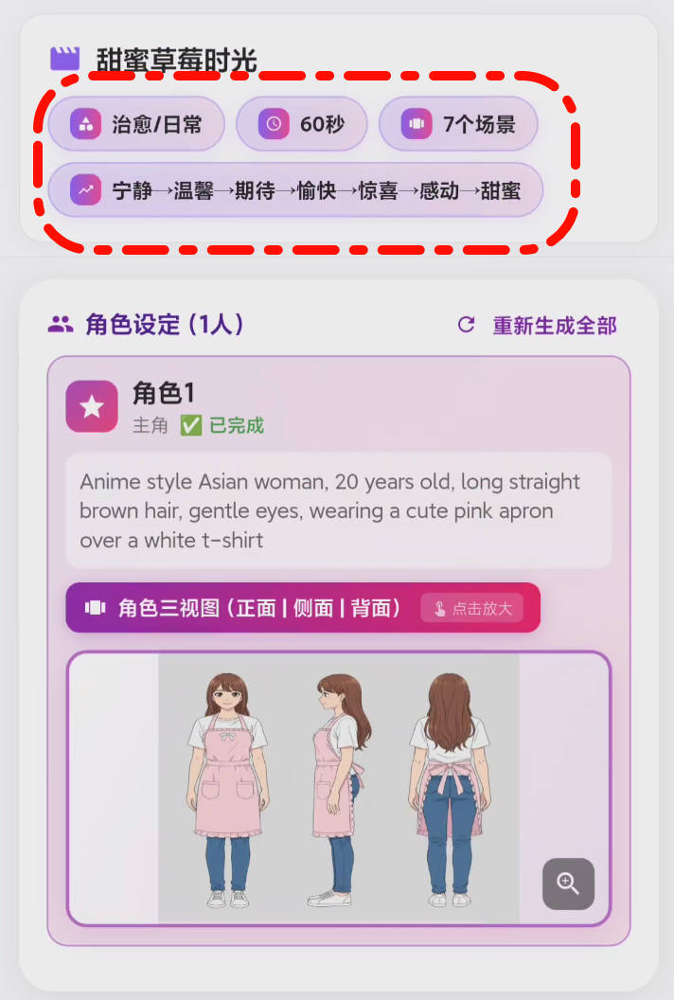
要是用这个写个霸道总裁爱上我的故事也不错吧，哈哈哈哈。
接下来看看具体的场景：
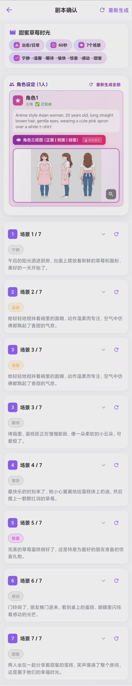
展开一个场景看看它是怎么规划的：
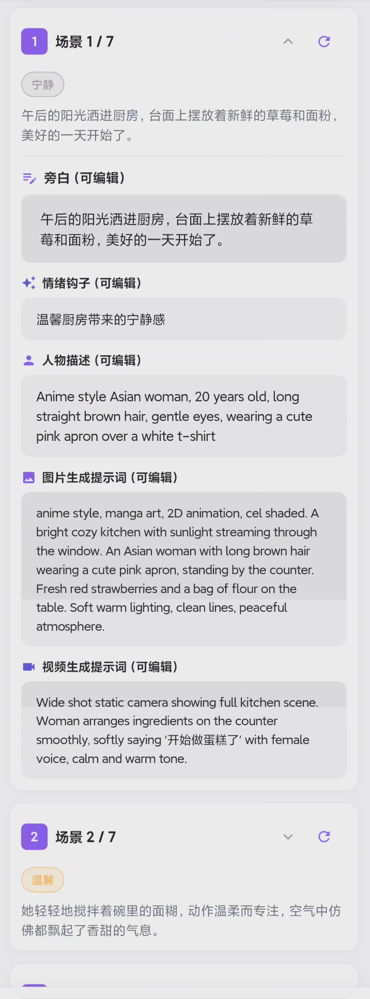
好的现在确认剧本，回到页面看到直接有任务在执行：
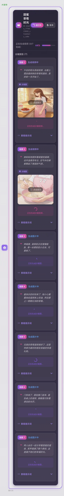
看了流程后不得不感叹，真🐔儿把老己当成导演了；
先生成不同的场景，每个根据有前面主角的三视图和提示词生成的分镜图，再由分镜图和视频提示词生成分镜视频。有点导演味道了。
看看具体的场景分镜是怎么规划的：
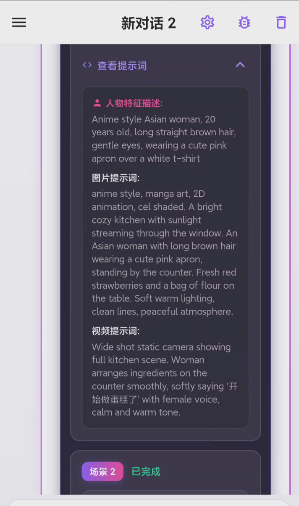
确实可以，视频提示词部分，规划了主角的言语和镜头方式。
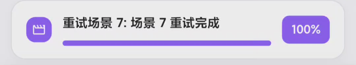
不用担心失败，还会重试，这个大概就是有些视频 api 会触发公共安全，会失败任务，此时 GLM 4.7 会根据提示弱化提示词，我看了一下日志大概是这样.
suspension> [ ] I/flutter ( 3052): ❌ [22:55:29] [场景重试] 场景 1 重试失败: Exception: 视频生成失败: {code: generation_failed, message: check status failed:
{"name":"c39408d4117fcedb3a89153dc5006a7904","error":{"code":3,"message":"PUBLIC_ERROR_AUDIO_FILTERED"}}}
场景1重试失败的根本原因是 PUBLIC_ERROR_AUDIO_FILTERED（音频被过滤）——平台审核判定你场景1提示词中的语音/音效描述违规，直接拦截了音频生成，进而导致整个视频生成流程终止（和画面描述无关，只卡音频环节）。
最终确定场景1最终合规版提示词（彻底规避音频过滤）：
Anime style, manga art, 2D animation, cel shaded.
Soft wide shot with gentle slow pan to the right, gradually revealing a tidy kitchen counter and fresh ingredients. A 17-year-old Japanese girl (anime style, Asian features) arranges eggs and flour softly on the counter, turns to the camera with a gentle warm smile, and says "今天要做个草莓蛋糕" in a soft warm tone (female voice, quiet whisper, low volume, calm mild speech).
Warm soft gentle lighting, peaceful and cozy kitchen atmosphere, no loud sounds, only soft gentle voice.然后基本上出错后，再让 Claude Code 配合 GLM 4.7，不断调整，最终出来了，我们想要的效果。
写在最后
如果非要较真，漫导 APP 和实际上的 AI 漫剧还有点距离，但可以想象通过多次的迭代和优化，一定可以更好。
要知道，这个 APP 实际耗时还没到 5 天啊，这放在以前，就这 MVP 版本，没个把星期开发不出来。
同时也验证了一个观点，现在 AI Coding，真的并非 Claude 不可，不给用还死贵，但凡有像 GLM 4.7 这样高性价比的模型取代，谁还用 Claude 啊？
这个 APP，我已经开源到 GitHub 了，你可以加上自己的 API，按照教程来玩一玩。
当然了如果你是开发者或者 AI Coder，欢迎来 PR，把他做好。
好啦，谢谢你看我的文章，如果喜欢可以点赞转发给需要的朋友，我们下一期再见。